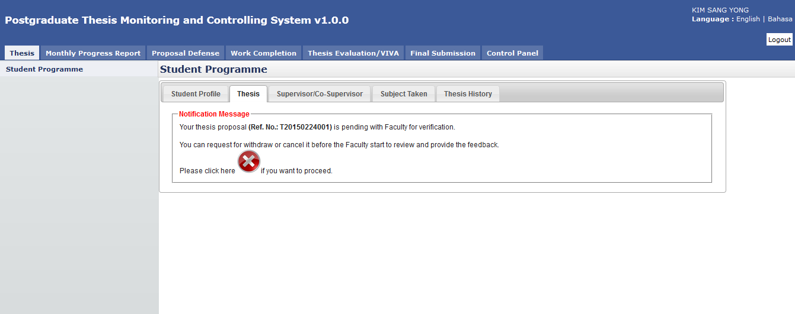

Request for Proposal Cancellation
Student is allowed to cancel his/her newly submitted proposal in case he/she realizes some amendment need to be done. For this case the student can request for proposal cancellation as shown below.

Figure 76: Proposal Cancellation
Steps:-
- Click on the Thesis tab on the Top panel
- Click on the Student Programme menu on the Left panel
- Click on the Thesis tab on the Working Area
- System will display the notification message to the student indicate that the proposal has been successfully submitted to the Faculty.
- If the student decided to cancel the proposal, he/she can click on the
 cancel button. Please note the cancellation only can be done if the Faculty is not yet provide the feedback.
cancel button. Please note the cancellation only can be done if the Faculty is not yet provide the feedback.

Figure 17: Request for Cancellation
- The student needs to provide the justification of the cancellation and once confirm click the Request for Cancellation button.
- Otherwise the student can click Back button and wait feedback from the Faculty and Senate.

Figure 18: Request for Cancellation - Notification Message
- The above message will be displayed after the student submits the cancellation request to the Faculty.
Created with the Personal Edition of HelpNDoc: Easily create EPub books